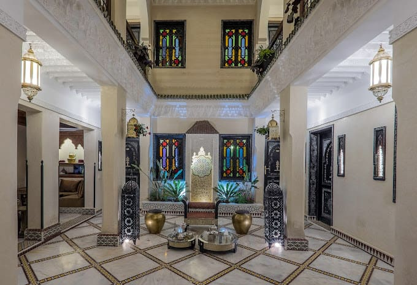
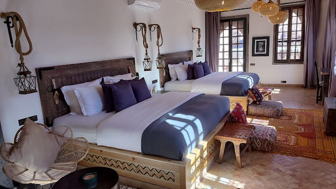
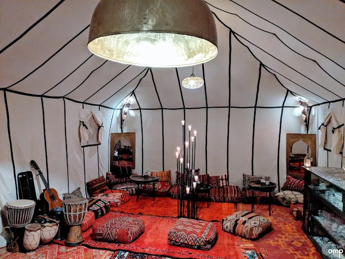

The short answer: Luxury in Morocco isn't mostly about big international resorts. It's about intimacy and craft: a beautifully restored riad with only a few rooms, a kasbah hotel facing a palm oasis, a desert camp with private en-suite tents in the Sahara, and your own driver-guide pacing every day around you. A well-planned luxury Morocco trip combines all of these over 8 to 14 days, with privacy and good timing mattering as much as thread count.
Travelers who are used to five-star city hotels sometimes arrive in Morocco expecting the same formula everywhere. The country's most memorable high-end stays are something different: smaller, more personal and deeply rooted in place. A twelve-room riad with carved cedar ceilings and a rooftop plunge pool can feel more luxurious than a 300-room hotel, and a well-run camp in the Erg Chebbi dunes offers a kind of luxury no city can: space, silence and a sky full of stars.
What "Luxury" Really Means in Morocco
In our experience, travelers who love Morocco at the top end care about five things:
- Privacy: a private vehicle, private guiding, intimate places to stay and no shared group schedule.
- Craft and character: zellige tilework, tadelakt walls, carved plaster and cedar, and rooms that could only be in Morocco.
- Comfort in remote places: a proper bed, hot shower and real service, even in the Sahara.
- Time: fewer, longer stays and drives that never feel rushed.
- Access: the right guide in the medina, the right camp in the dunes, the right table on the right terrace.
Boutique Riads: The Heart of a Luxury Trip
A riad is a traditional house built around an inner courtyard, and the finest have been restored into small boutique hotels. In Marrakech and Fes, staying in one puts you inside the old city, a few minutes' walk from the souks, yet completely calm behind your door.
What separates an exceptional riad from an ordinary one:
- a quiet location with easy access, ideally close to a lane a car can reach;
- suites rather than standard rooms, with good soundproofing and air conditioning or heating;
- a courtyard or rooftop pool, a hammam or spa, and a roof terrace for dinner;
- staff who know you by name from the first evening.

Not sure whether a riad or a hotel suits you better? Our guide to choosing between a riad and a hotel compares them honestly, and our riad etiquette guide explains what to expect once you arrive.
Kasbah and Boutique Hotels on the Road South
Between Marrakech and the Sahara, the best places to stay are restored kasbahs and boutique hotels in the Dades Valley, Skoura Oasis and around Ouarzazate. Expect earthen architecture, gardens, pools and views over palms and gorges.
One property we often recommend for travelers who want the highest comfort on this route is Eden Boutique Hotel and Spa in the Dades Valley, a five-star hotel beneath the rock formations known locally as the Monkey Fingers.

Luxury Desert Camps in the Sahara
The desert camp is the emotional high point of most Morocco trips, and the place where the difference between standard and luxury is greatest. At the top end, expect:
- spacious private tents with proper beds and quality bedding;
- an en-suite bathroom with a flushing toilet and hot shower;
- heating or heavy blankets for winter nights;
- dinner served with care, by lantern light or around the fire, with music afterward;
- a setting among the dunes, reached by camel at sunset.

At Merzouga we often recommend Tiziri Camp, a luxury eco camp with private en-suite tents set among the Erg Chebbi dunes. For travelers who want true remoteness, the camps of Erg Chigaga, reached by 4x4 beyond M'Hamid, are quieter still. Read our comparison of Morocco's deserts and our guide to a night at a desert camp.
Private Experiences Worth Adding
- A private guided morning in the Fes medina, including the Bou Inania Madrasa and the Chouara tanneries, before the crowds.
- A hot-air balloon flight at sunrise over the countryside outside Marrakech.
- A traditional hammam and spa ritual in a riad or hotel spa.
- A private cooking class with a Moroccan cook.
- A private dinner in the dunes, arranged with your camp.
- A full day in the desert by 4x4, visiting nomad families and the Gnawa musicians of Khamlia.
A Luxury Morocco Route
For a first luxury trip, we suggest 10 to 14 days, with two nights in each main stop:
| Nights | Where | Stay |
|---|---|---|
| 2–3 | Marrakech | Boutique riad with a pool and spa |
| 1 | Dades Valley | Boutique hotel with gorge views |
| 2 | Merzouga (Erg Chebbi) | Luxury camp with en-suite tents |
| 2–3 | Fes | Restored palace riad in the medina |
| 1–2 | Chefchaouen | Boutique hotel or riad |
| 2 | Essaouira (optional) | Ocean-view riad or hotel |
Our 12-day Grand Circuit and 15-day Grand Adventure follow this shape. Every accommodation on our journeys can be upgraded to the level you prefer, and we'll quote the difference clearly.
Luxury Mistakes to Avoid
- Too many one-night stops. Even the best riad can't be enjoyed if you check out at 8am.
- Assuming all desert camps are similar. They vary enormously. Ask specifically about private bathrooms, beds and heating.
- Choosing a riad only by its photos. Location and access matter as much as decor.
- Skipping the guide in Fes. The medina is the world's largest car-free old city. A good guide is the luxury there.
- Peak dates without planning. The best small riads and camps fill early around Christmas, New Year and Easter.
Design Your Luxury Morocco Journey
Tell us how you like to travel, and we'll put together a private itinerary with the riads, hotels and camps that suit you. Start with our Signature Journeys, or request a tailor-made proposal with your dates and preferences. For pricing, see our guide to private Morocco tour costs.